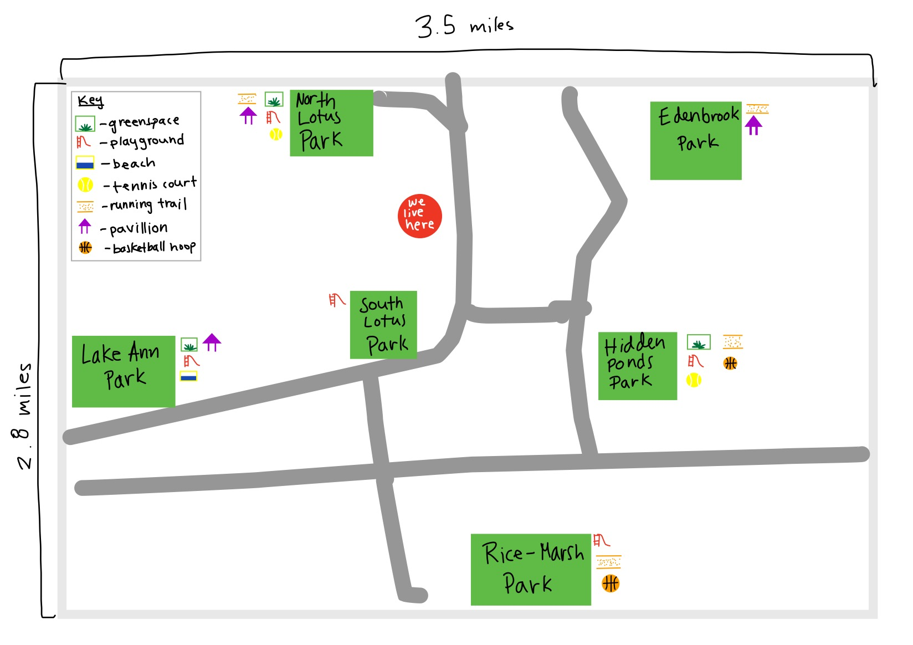

The Data will be collected through an email survey, sent out the the Target Audience. The prompt they are answering will be,"At the ideal park for you, are the following amenities necessary?," follwed by seven Y/N questions. The questions will ask about greenspace, playgrounds, a beach, a tennis court, a running trail, a pavillion, and a basketball hoop. The Yes/No data is then compiled in a spreadsheet and in a much more usable data form.
The park data must also be cleaned and cleared before it is fully usable. Because the survey only asks for yes or no, and has no free response section, only preset park ideas, this is a potential source of error for what amenities are actually desired; if what they want is not listed it cannot be displayed in the data. However, the data does account for a wide array of amenities, and the collected data must be cleaned. The people that responded with all "No's" to the survey were thrown out because they could not be placed on a map overlay of the park because there was nothing to match them with. The cleaned data is what one sees on the final map and person overlay image.
Below, the two images display six local parks and the desired park amenities by each data point(person). These two items are then melded into the final image on the bottom of the page, displaying how the data can be used to make user-desirable park recommendations.
With the clean data points, one is able to make a user catered map that matches each user to the park. Each user is primarily placed by the park location that meets all of their desired amenities, and not more if possible to avoid park overcrowding in recommendations. However, some users cannot be placed at one park because all of their needs cannot be met at one place. In this case, the user is then placed at two parks that offer highest number of amenities possible. If the users needs can be met at more than one location, the recommendation will appear at multiple locations as well. Essentially, the user data is overlayed on the local park map to create recommendations for the target audience to find local parks containing the desired equipment or activity areas, as displayed in the final image.